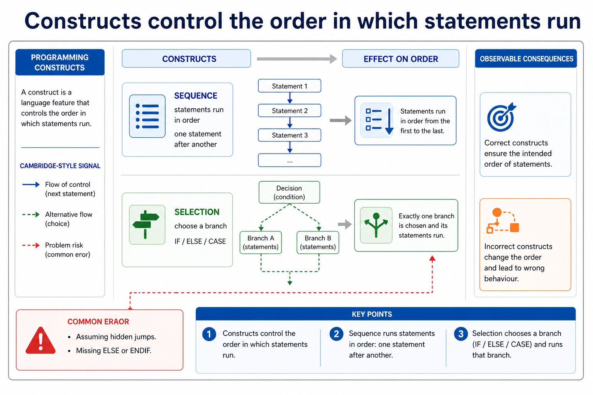
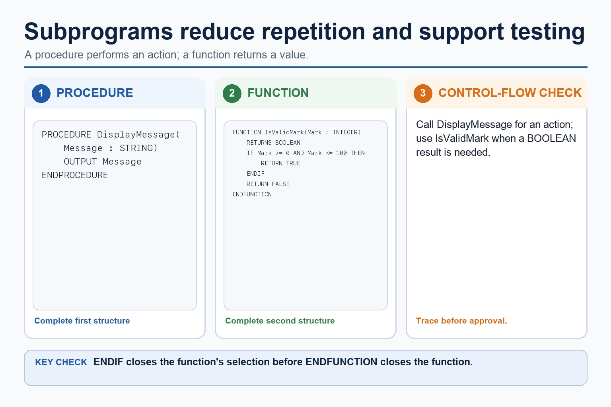
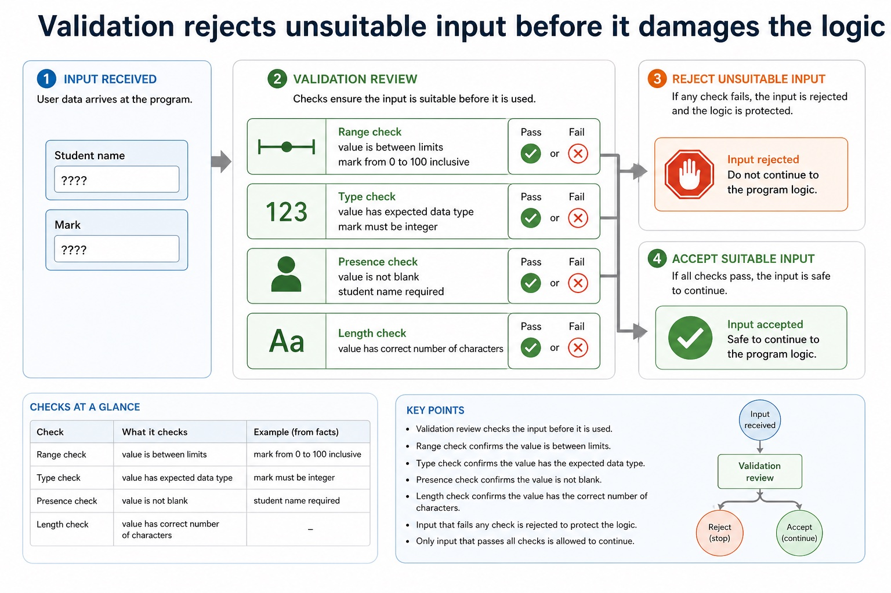

Lesson 148 | 45 minutes | Paper 2 review | informal questioning
Programming review is grammar plus logic. Syntax is the spelling; control flow is the story.
This lesson reviews programming constructs and file handling in Cambridge-style pseudocode: sequence,
selection, iteration, subprograms, validation, file modes and end-of-file loops. Chinese support:
construct 构造, parameter 参数, return value 返回值, file mode 文件模式, validation 验证。
Recogniseconstructs from mixed pseudocode snippets
Applyfile read/write/append patterns correctly
Explainvalidation and subprogram choices with precise terms
SelectionIF / CASEchoose a path
IterationFOR / WHILE / REPEATrepeat safely
SubprogramPROCEDURE / FUNCTIONreuse logic
FileREAD / WRITE / APPENDpersist data
Why this matters
Paper 2 answers lose marks when students know the idea but write the wrong construct or file mode. Precision is not decoration here.
Common trap
Java syntax can help you practise, but Cambridge pseudocode is the exam language. Do not answer file questions with Java libraries unless asked.
Warm-up hook
Which file mode should be used?
Scenario: add one new quiz score to the end of an existing file without deleting old scores.
Pick the mode that preserves existing records and adds a new one.
Programming constructs
Constructs control the order in which statements run
Construct
Meaning
Cambridge-style signal
Common trap
Sequence
statements run in order
one statement after another
assuming hidden jumps
Selection
choose a branch
IF / ELSE / CASE
missing ELSE or ENDIF
Iteration
repeat statements
FOR / WHILE / REPEAT
off-by-one loop bounds
Subprogram
named reusable block
PROCEDURE / FUNCTION
confusing return value with output
Constructs control the order in which statements run

Constructs control the order in which statements run: source-grounded visual explanation.
- Lesson fact: Programming constructs
- Lesson fact: Construct
- Lesson fact: Cambridge-style signal
- Lesson fact: Common trap
- Lesson fact: Sequence
- Lesson fact: statements run in order
- Lesson fact: one statement after another
- Lesson fact: assuming hidden jumps
- Lesson fact: Selection
- Lesson fact: choose a branch
- Lesson fact: IF / ELSE / CASE
- Lesson fact: missing ELSE or ENDIF
Selection review
Use IF for decisions, CASE for clean multi-way choices
IF example
IF Mark >= 50 THEN
OUTPUT "Pass"
ELSE
OUTPUT "Resit needed"
ENDIF
CASE example
CASE MenuChoice OF
1 : CALL AddScore()
2 : CALL DisplayScores()
3 : CALL SaveScores()
OTHERWISE : OUTPUT "Invalid choice"
ENDCASE
Use IF for decisions, CASE for clean multi-way choices
 Use IF for decisions, CASE for clean multi-way choices: source-grounded visual explanation.
Use IF for decisions, CASE for clean multi-way choices: source-grounded visual explanation.
- Lesson fact: Selection review
- Lesson fact: IF example
- Lesson fact: IF Mark >= 50 THEN
- Lesson fact: OUTPUT "Pass"
- Lesson fact: OUTPUT "Resit needed"
- Lesson fact: CASE example
- Lesson fact: CASE MenuChoice OF
- Lesson fact: 1 : CALL AddScore()
- Lesson fact: 2 : CALL DisplayScores()
- Lesson fact: 3 : CALL SaveScores()
- Lesson fact: OTHERWISE : OUTPUT "Invalid choice"
Iteration review
Choose the loop by what is known before the loop starts
FOR
number of repetitions is known
process 30 scores
WHILE
condition is checked before each repetition
read until end of file
REPEAT UNTIL
body must run at least once
keep asking until valid input
Boundary warning: if a loop says 1 to 5, there are five iterations. The loop counter is not just decorative furniture.
Choose the loop by what is known before the loop starts
 Choose the loop by what is known before the loop starts: source-grounded visual explanation.
Choose the loop by what is known before the loop starts: source-grounded visual explanation.
- Lesson fact: Iteration review
- Lesson fact: Use when
- Lesson fact: number of repetitions is known
- Lesson fact: process 30 scores
- Lesson fact: condition is checked before each repetition
- Lesson fact: read until end of file
- Lesson fact: REPEAT UNTIL
- Lesson fact: body must run at least once
- Lesson fact: keep asking until valid input
- Lesson fact: Boundary warning: if a loop says 1 to 5, there are five iterations. The loop counter is not just decorative furniture.
Procedures and functions
Subprograms reduce repetition and make code testable
Procedure
PROCEDURE DisplayMessage(Message : STRING)
OUTPUT Message
ENDPROCEDURE
A procedure performs an action and does not have to return a value.
Function
FUNCTION IsValidMark(Mark : INTEGER) RETURNS BOOLEAN
IF Mark >= 0 AND Mark <= 100 THEN
RETURN TRUE
ELSE
RETURN FALSE
ENDIF
ENDFUNCTION
A function returns a value that can be used in an expression.
Subprograms reduce repetition and make code testable

Subprograms reduce repetition and make code testable: source-grounded visual explanation.
- Lesson fact: Procedures and functions
- Lesson fact: Procedure
- Lesson fact: PROCEDURE DisplayMessage(Message : STRING)
- Lesson fact: OUTPUT Message
- Lesson fact: ENDPROCEDURE
- Lesson fact: A procedure performs an action and does not have to return a value.
- Lesson fact: Function
- Lesson fact: FUNCTION IsValidMark(Mark : INTEGER) RETURNS BOOLEAN
- Lesson fact: IF Mark >= 0 AND Mark <= 100 THEN
- Lesson fact: RETURN TRUE
- Lesson fact: RETURN FALSE
- Lesson fact: ENDFUNCTION
Validation review
Validation rejects unsuitable input before it damages the logic
Range check
value is between limits
mark from 0 to 100 inclusive
Type check
value has expected data type
mark must be integer
Presence check
value is not blank
student name required
Length check
value has correct number of characters
StudentID length is 8
Validation rejects unsuitable input before it damages the logic

Validation rejects unsuitable input before it damages the logic: source-grounded visual explanation.
- Lesson fact: Validation review
- Lesson fact: Range check
- Lesson fact: value is between limits
- Lesson fact: mark from 0 to 100 inclusive
- Lesson fact: Type check
- Lesson fact: value has expected data type
- Lesson fact: mark must be integer
- Lesson fact: Presence check
- Lesson fact: value is not blank
- Lesson fact: student name required
- Lesson fact: Length check
- Lesson fact: value has correct number of characters
File handling review
Open the file in the correct mode, process records, then close it
Read pattern
OPENFILE "Scores.txt" FOR READ
WHILE NOT EOF("Scores.txt")
READFILE "Scores.txt", Line
OUTPUT Line
ENDWHILE
CLOSEFILE "Scores.txt"
Append pattern
OPENFILE "Scores.txt" FOR APPEND
WRITEFILE "Scores.txt", NewScore
CLOSEFILE "Scores.txt"
APPEND preserves existing records. WRITE is usually for creating or replacing file contents.
Open the file in the correct mode, process records, then close it
 Open the file in the correct mode, process records, then close it: source-grounded visual explanation.
Open the file in the correct mode, process records, then close it: source-grounded visual explanation.
- Lesson fact: File handling review
- Lesson fact: Read pattern
- Lesson fact: OPENFILE "Scores.txt" FOR READ
- Lesson fact: WHILE NOT EOF("Scores.txt")
- Lesson fact: READFILE "Scores.txt", Line
- Lesson fact: OUTPUT Line
- Lesson fact: ENDWHILE
- Lesson fact: CLOSEFILE "Scores.txt"
- Lesson fact: Append pattern
- Lesson fact: OPENFILE "Scores.txt" FOR APPEND
- Lesson fact: WRITEFILE "Scores.txt", NewScore
- Lesson fact: APPEND preserves existing records. WRITE is usually for creating or replacing file contents.
Worked examples
Review patterns that turn into marks
Practice with instant checking
Short retrieval before exam-style questions
Mistake debugging
Fix the construct or file-mode error
Exam-style questions
Programming constructs and file handling questions with expandable MS
These are original AS-style questions. The mark schemes use Cambridge-style precision, not copied past-paper wording.
Constructselection chooses, iteration repeats, sequence orders
Subprogramprocedure performs; function returns
File modeREAD reads, WRITE creates/replaces, APPEND adds
Homework
Complete a Paper 2 programming constructs review sheet
- Write one IF, one CASE, one FOR loop and one REPEAT UNTIL loop in Cambridge-style pseudocode.
- Write a function that validates a mark from 0 to 100 and returns BOOLEAN.
- Write pseudocode to append one new score to a file without deleting existing scores.
- Answer one 6-mark question explaining why file mode and CLOSEFILE matter.
Marking focus: correct construct, correct file mode, and clear expected behaviour. Java is support only.